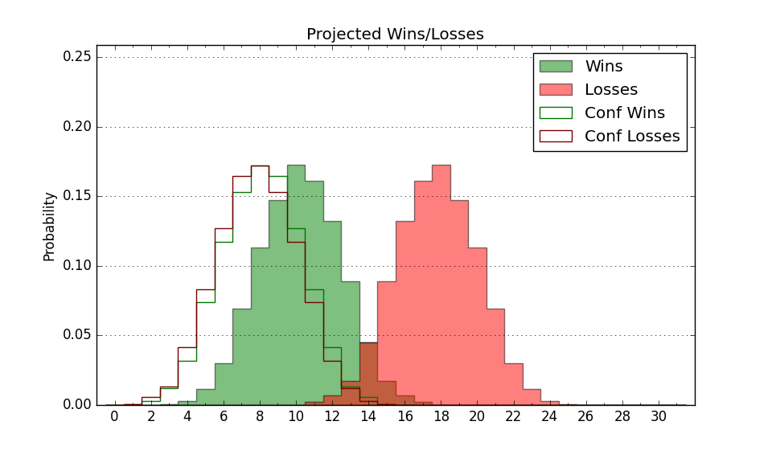

| Home | Game Probabilities | Conferences | Preseason Predictions | Odds Charts | NCAA Tournament |
| City: | Boiling Springs, North Carolina | |
| Conference: | Big South (1st)
| |
| Record: | 0-0 (Conf) 2-9 (Overall) | |
| Ratings: | Comp.: -4.3 (220th) Net: -4.9 (227th) Off: 97.4 (275th) Def: 102.2 (155th) SoR: 0.0 (232nd) |
| Remaining | ||||||
|---|---|---|---|---|---|---|
| Date | Opponent | Win Prob | Pred. | |||
| 12/30 | @ VCU (73) | 10.2% | L 59-73 | |||
| 1/6 | @ High Point (138) | 21.5% | L 67-76 | |||
| 1/10 | Charleston Southern (341) | 88.0% | W 75-62 | |||
| 1/13 | Presbyterian (303) | 81.3% | W 74-64 | |||
| 1/17 | @ Radford (162) | 25.5% | L 63-70 | |||
| 1/20 | Winthrop (151) | 52.0% | W 71-70 | |||
| 1/24 | @ Longwood (140) | 22.3% | L 61-70 | |||
| 1/27 | USC Upstate (286) | 78.4% | W 71-62 | |||
| 1/31 | UNC Asheville (184) | 59.2% | W 70-67 | |||
| 2/7 | @ Presbyterian (303) | 56.1% | W 70-68 | |||
| 2/10 | High Point (138) | 48.2% | L 71-72 | |||
| 2/14 | @ Charleston Southern (341) | 68.4% | W 71-66 | |||
| 2/17 | @ USC Upstate (286) | 51.6% | W 67-66 | |||
| 2/21 | Radford (162) | 53.8% | W 67-66 | |||
| 2/24 | @ UNC Asheville (184) | 29.8% | L 66-72 | |||
| 2/28 | Longwood (140) | 49.4% | L 65-66 | |||
| 3/2 | @ Winthrop (151) | 24.1% | L 66-74 | |||
| Previous | Game Score | |||||
| Date | Opponent | Win Prob | Result | Off | Def | Net |
| 11/10 | @Arkansas (51) | 7.5% | L 68-86 | -5.8 | 1.2 | -4.7 |
| 11/12 | @Baylor (13) | 2.9% | L 62-77 | -5.6 | 14.5 | 8.8 |
| 11/17 | (N) Weber St. (123) | 30.9% | W 62-61 | 18.4 | -2.6 | 15.8 |
| 11/18 | (N) Colgate (125) | 31.1% | L 52-59 | -11.5 | 14.0 | 2.5 |
| 11/19 | (N) Yale (112) | 28.3% | L 70-71 | -4.8 | 11.2 | 6.4 |
| 11/29 | @Queens (279) | 48.5% | L 80-83 | 5.3 | -7.5 | -2.2 |
| 12/2 | Western Carolina (143) | 49.9% | W 82-77 | 11.6 | -5.3 | 6.4 |
| 12/6 | Wofford (188) | 59.5% | L 66-81 | -16.8 | -12.9 | -29.7 |
| 12/16 | (N) Appalachian St. (87) | 22.2% | L 59-80 | -7.4 | -6.9 | -14.3 |
| 12/19 | @Chattanooga (221) | 35.3% | L 66-69 | -1.7 | 3.3 | 1.6 |
| 12/21 | @Akron (117) | 18.4% | L 90-94 | 21.6 | -13.9 | 7.7 |
| Stats & Trends | |||||
|---|---|---|---|---|---|
| Current | Day | Week | Month | Season | |
| Composite | -4.3 | +0.1 | -0.8 | -1.6 | -1.7 |
| Comp Rank | 220 | -1 | -12 | -29 | -30 |
| Net Efficiency | -4.9 | +0.2 | -0.9 | -1.9 | -- |
| Net Rank | 227 | +2 | -15 | -36 | -- |
| Off Efficiency | 97.4 | +2.2 | +1.4 | +3.6 | -- |
| Off Rank | 275 | +20 | +14 | +16 | -- |
| Def Efficiency | 102.2 | -2.0 | -2.3 | -5.5 | -- |
| Def Rank | 155 | -24 | -28 | -55 | -- |
| SoS Rank | 36 | +3 | +9 | -6 | -- |
| Exp. Wins | 10.2 | -0.3 | -1.3 | -2.8 | -3.2 |
| Exp. Conf Wins | 8.1 | -0.1 | -0.5 | -0.9 | -1.1 |
| Conf Champ Prob | 7.3 | -0.2 | -2.9 | -10.6 | -9.9 |

| Advanced Stats | ||
|---|---|---|
| Stat | Value | Rank |
| Off Eff FG % | 0.442 | 331 |
| Off Ast Ratio | 0.118 | 305 |
| Off ORB% | 0.285 | 151 |
| Off TO Rate | 0.132 | 72 |
| Off FT Ratio | 0.380 | 70 |
| Def Eff FG % | 0.489 | 147 |
| Def Ast Ratio | 0.132 | 120 |
| Def ORB% | 0.258 | 116 |
| Def TO Rate | 0.144 | 226 |
| Def FT Ratio | 0.433 | 331 |